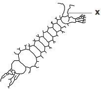
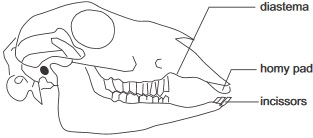
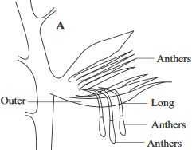
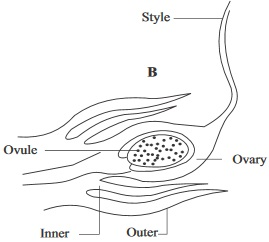

SSCE NOV 1989 Biology 1 practical question 9 a,b,c.
Find out
Why the right kidney is slightly lower that the left kidney?
How many times each day, the entire human blood is filtered by the kidneys
fig2.94 is The jaw and dentition of a mammal

16.a. Is the organism a herbivore or a carnivore?
Maize flower
fig5.8c: A

fig5.8d: B

(a) Which of the flowers in the diagrams above is male and which one is female
-
-
(b) Does the flower favour insect pollination or wind pollination? Gave reason for your answer